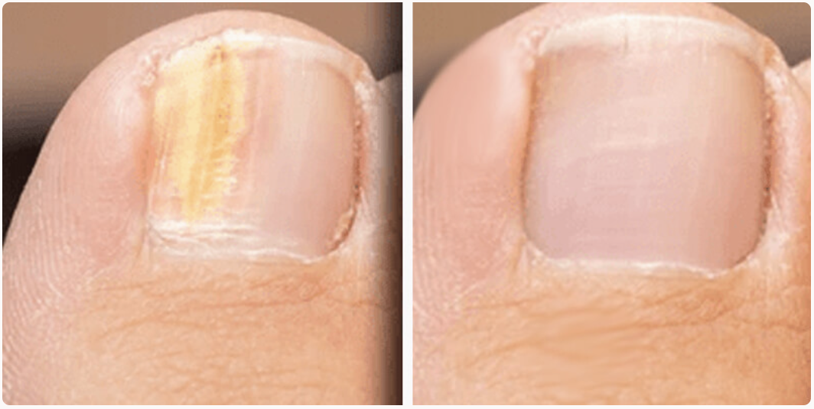
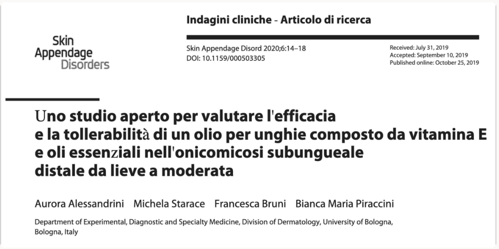
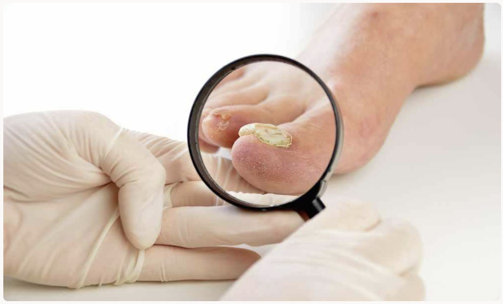
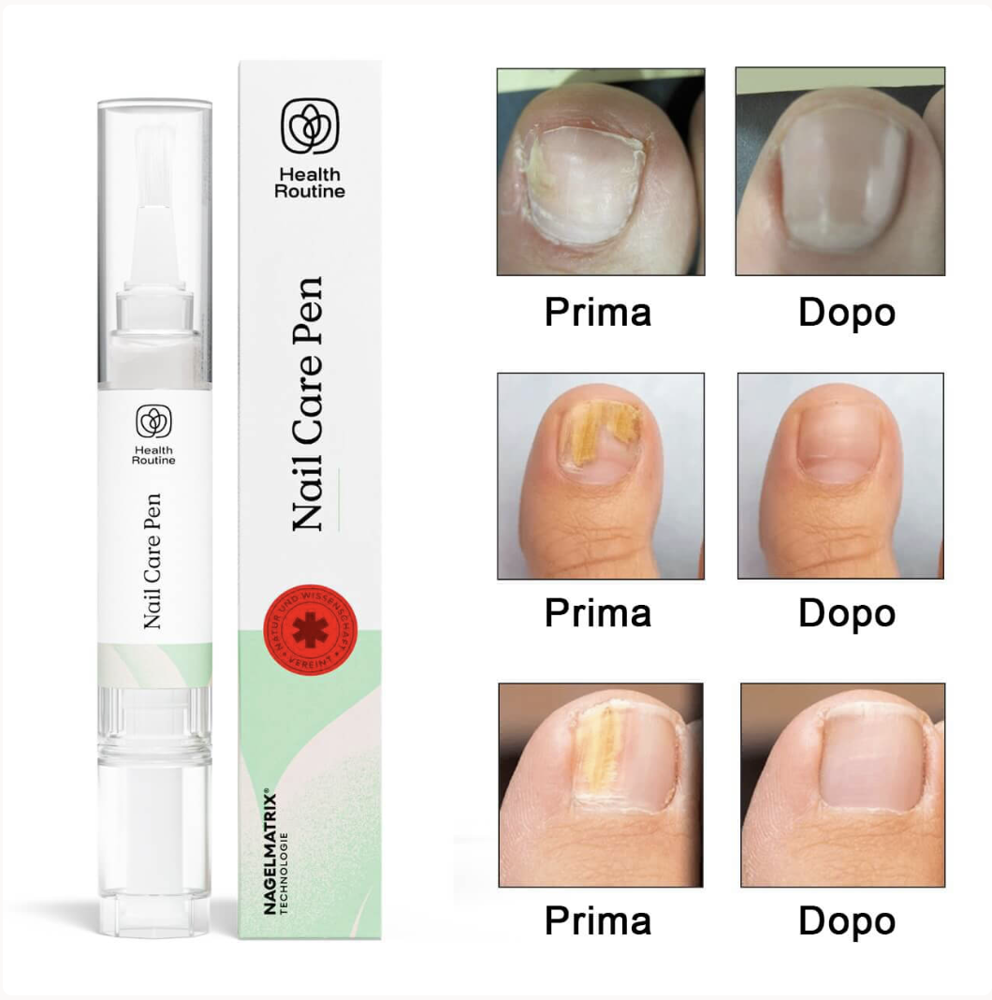
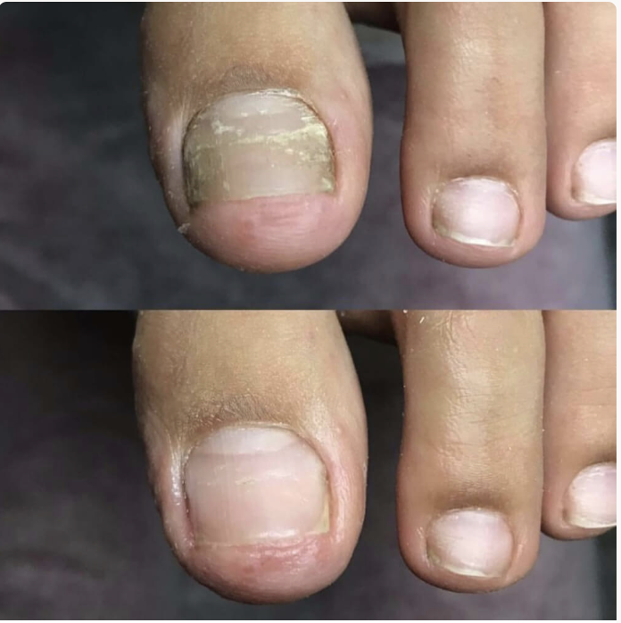
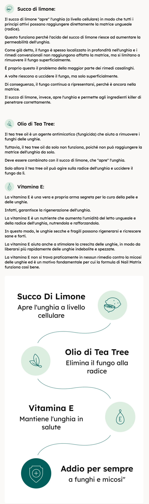
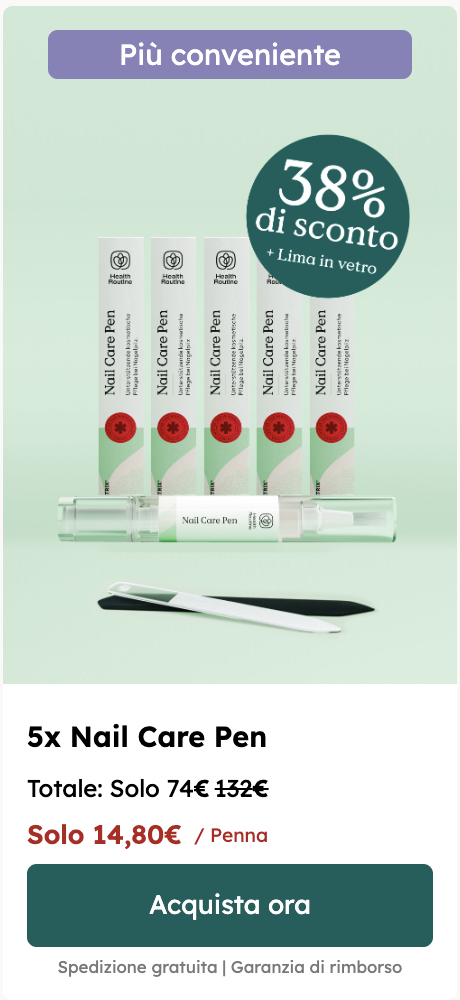
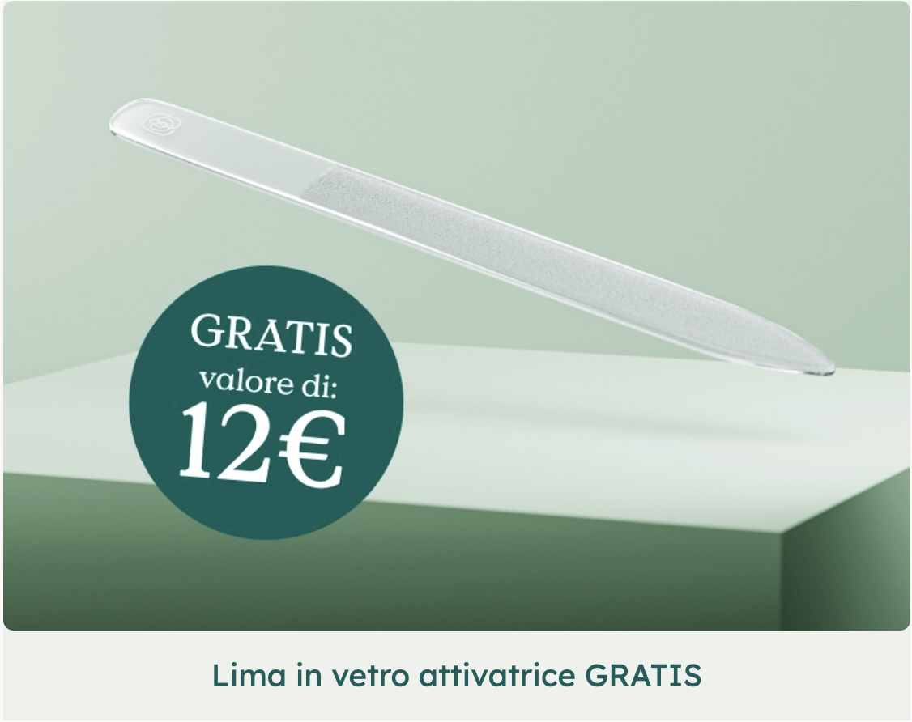
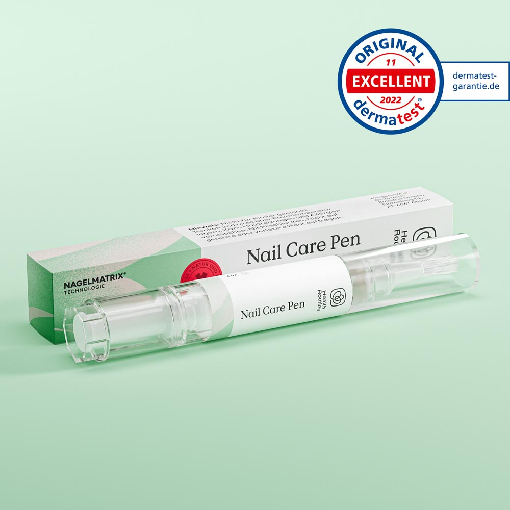
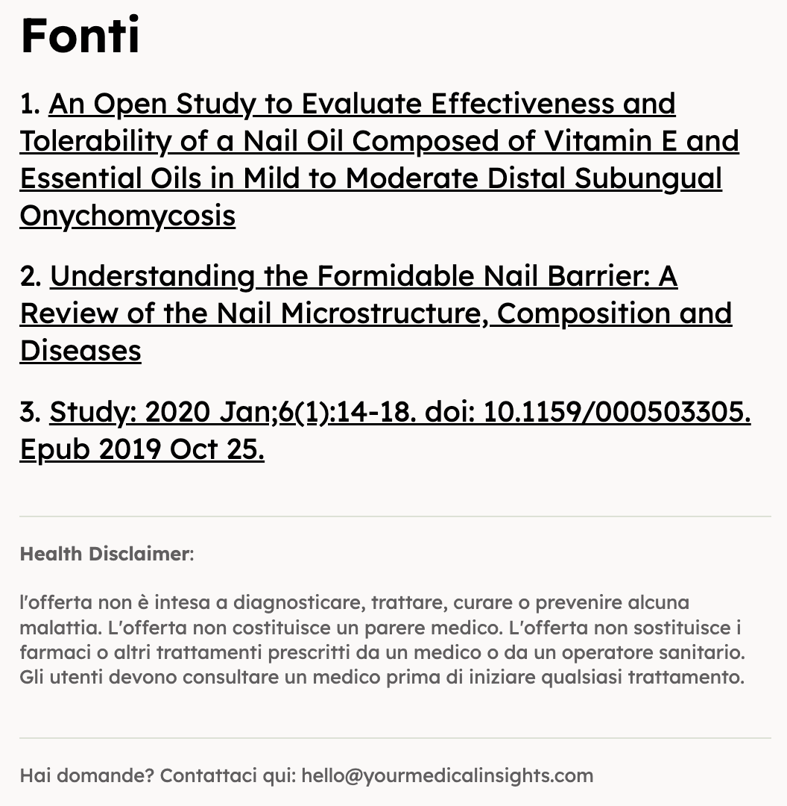

"A 67 anni ho scoperto perché NULLA aveva mai funzionato contro la micosi... e come ho risolto il problema in 28 giorni (senza farmaci o visite imbarazzanti)"

Maria Rossi
Testimonianza reale • 67 anni
Se nascondi i piedi da mesi (o anni) e hai provato di tutto senza risultati, questa scoperta cambierà per sempre il tuo approccio al problema

"Mi chiamo Maria, ho 67 anni e fino a pochi mesi fa vivevo prigioniera dei miei piedi.
La vergogna era così forte che mi ero auto-esclusa da momenti che una nonna dovrebbe custodire nel cuore. Come una semplice giornata al mare con i miei nipoti.
Ma oggi… voglio raccontarti qualcosa che ha cambiato per sempre la mia vita.
E spero con tutto il cuore che cambierà anche la tua."

IL GIORNO IN CUI HO DETTO “BASTA”
Era luglio. Faceva caldo. I miei nipotini erano lì, con i secchielli in mano, e mi chiedevano con gli occhi lucidi:
"Nonna, vieni al mare con noi?"
Ho mentito: “Oggi la nonna è troppo stanca.”
Ma la verità?
Avevo paura che qualcuno vedesse i miei piedi.
Tutto era iniziato con una macchiolina gialla sull’alluce. In pochi mesi, le unghie erano diventate:
- Spesse come cartone
- Giallastre, maleodoranti
- Dolorose anche solo con le scarpe
- Così brutte che non riuscivo nemmeno a guardarle
Avevo perso fiducia, intimità e libertà.

LA VERITÀ CHE NESSUNO TI DICE SULLA MICOSI
Sai cosa mi ha detto il primo medico? "Prenda questa crema antimicotica. Se non funziona, dovremo togliere l'unghia."
TOGLIERE L'UNGHIA! A 60 anni!
Ho speso oltre 800€ in:
- Creme "miracolose"
- Smalti medicati
- Trattamenti laser costosi
- Persino rimedi della nonna con aceto e bicarbonato
RISULTATO? ZERO. ANZI, PEGGIORAVA.
Ma il vero problema non erano i soldi spesi... era quello che questa maledetta micosi mi stava rubando:
❌ La gioia di giocare con i nipoti in spiaggia
❌ La serenità di camminare a piedi nudi in casa
❌ La sicurezza di indossare sandali d'estate
❌ L'intimità con mio marito (sì, anche quella ne risentiva)
Mi sentivo prigioniera dei miei stessi piedi.
LA SCOPERTA CHE HA CAMBIATO TUTTO
Un giorno mia figlia Giulia mi ha fatto una domanda che mi ha aperto gli occhi:
"Mamma, ma se hai già provato tutto… possibile che siano tutti trattamenti sbagliati?"
Non sapevo rispondere. Così ha iniziato a fare ricerche...
E ha trovato una scoperta dell’Università di Bologna che mi ha letteralmente lasciata a bocca aperta.
Una verità scioccante:
Il 97% dei trattamenti tradizionali fallisce perché attacca solo i SINTOMI, non la CAUSA
A quanto pare la micosi è più profonda di quanto pensiamo. Non si tratta solo di un problema "esterno" ed estetico. Il fungo si insinua sotto l’unghia, in profondità, dove creme e smalti non arrivano mai. Ecco perché:- La micosi sparisce... ma poi ritorna peggio di prima
- Diventa resistente
- E non ti lascia mai in pace
LA FORMULA AUSTRIACA CHE PENETRA DOVE GLI ALTRI FALLISCONO
Nello stesso studio, un team di ricercatori ha sviluppato una formula brevettata con una tecnologia unica:
Una penna applicatrice con ingredienti naturali in grado di penetrare fino alle "radici" del fungo.
Non una crema che resta in superficie. Non uno smalto che si secca sopra l'unghia.
Una formula liquida brevettata che attraversa tutti gli strati dell'unghia e attacca il fungo alla radice.
Il nome? Nail Care Pen.

"IMPOSSIBILE CHE FUNZIONI" (PENSAVO)
Ammetto di essere stata scettica.
Avevo perso fiducia in tutto.
D'altronde, avevo già speso più di 800€ in presunti metodi "miracolosi".
Come potevo fidarmi, di nuovo?
Come potevo basarmi solo su uno studio trovato online e accertarmi che non fosse l'ennesima fregatura?
Ma poi… ho letto qualcosa che mi ha colpita al cuore.
LA GARANZIA PIÙ FOLLE CHE AVESSI MAI VISTO
365 giorni di garanzia totale.
Un anno intero per provare il prodotto. Se non funziona, ti restituiscono tutto fino all'ultimo centesimo.
"Nessuna azienda darebbe una garanzia così lunga se il prodotto non funzionasse davvero", ho pensato.
Così ho ordinato la mia Nail Care Pen.
I PRIMI 7 GIORNI: NIENTE MIRACOLI (MA QUALCOSA STAVA CAMBIANDO)
Non mento: i primi giorni non ho visto grandi differenze.
Applicavo la penna mattina e sera, come indicato. Era facilissimo: bastava passarla sull'unghia come un pennarello.
Ma verso il quarto giorno ho notato qualcosa di strano...
Il dolore stava diminuendo.
E l'odore sgradevole? Sparito.
SETTIMANA 2-3: IL CAMBIAMENTO ACCELERA
Alla fine della seconda settimana, l'unghia aveva iniziato a cambiare colore.
Dal giallo malato stava tornando verso un colore più naturale.
Alla terza settimana, la parte che ricresceva era completamente sana.
GIORNO 28: IL MIRACOLO
Non dimenticherò mai quel martedì mattina.
Mi sono svegliata, ho guardato i miei piedi e... non credevo ai miei occhi.
Le unghie erano tornate normali. Completamente.
Niente più:
- Colore giallo
- Spessore eccessivo
- Dolore
- Odore
- Imbarazzo
Per la prima volta in tre anni, ho guardato i miei piedi e ho sorriso.

IL PRIMO BAGNO AL MARE DOPO 3 ANNI
Due settimane dopo, è successo qualcosa di magico.
Ero in giardino con i nipoti quando il piccolo Matteo mi ha chiesto: "Nonna, domani vieni al mare con noi?"
Questa volta ho detto SÌ.
Il giorno dopo, per la prima volta in tre anni, ho camminato a piedi nudi sulla sabbia.
I miei nipoti correvano intorno a me, felicissimi di avere finalmente la loro nonna "completa" con loro.
Ho pianto di gioia.
PERCHÉ LA NAIL CARE PEN FUNZIONA QUANDO TUTTO IL RESTO FALLISCE
Ho chiesto al Dr. Roberto Marini, podologo con 23 anni di esperienza che mi segue da qualche mese, di spiegarmi il meccanismo.
Ecco cosa mi ha detto:
"Maria, la maggior parte dei trattamenti per micosi agisce solo superficialmente. La Nail Care Pen invece utilizza una tecnologia di micro-penetrazione che permette agli ingredienti attivi di raggiungere le spore fungine anche negli strati più profondi dell'unghia.
È per questo che elimina il problema alla radice, invece di mascherare temporaneamente i sintomi. È l'approccio più intelligente che io abbia mai visto."
GLI INGREDIENTI ATTIVI CHE COMBATTONO LA MICOSI:

I 3 SEGRETI DELLA NAIL CARE PEN:
PENETRAZIONE PROFONDA
La formula liquida attraversa tutti gli strati dell'unghia
INGREDIENTI NATURALI
Nessun effetto collaterale, sicura anche per uso prolungato
AZIONE COMPLETA
Elimina il fungo esistente E previene le ricadute
NON SONO L'UNICA: MIGLIAIA DI PERSONE HANNO RISOLTO IL PROBLEMA
Dopo la mia esperienza, ho scoperto che migliaia di persone in tutta Europa hanno risolto lo stesso problema:
Giuseppe, 71 anni, Torino: "Avevo la micosi da 8 anni. Dopo 5 settimane con la Nail Care Pen, le mie unghie sono tornate perfette. Mia moglie non ci credeva!"
Anna, 58 anni, Napoli:
"Finalmente posso indossare sandali senza vergogna. È il prodotto migliore che abbia mai provato."
Marco, 63 anni, Milano: "Pensavo di dover convivere con questo problema per sempre. Mi sbagliavo. Grazie di cuore."
L'OCCASIONE CHE NON PUOI PERDERE

Offerta riservata: completa l'ordine entro
10:00
PERCHÈ DOVREI ACQUISTARNE 5?
L'acquisto di una confezione multipla da 5 pezzi è essenziale per garantire il successo completo del trattamento contro la micosi delle unghie.
Come ti ho spiegato prima, il fungo deve essere debellato completamente alla radice per evitare recidive, e questo richiede un trattamento continuativo di almeno 3 mesi.
Molti clienti hanno commesso l'errore di acquistare inizialmente solo una penna per testare il prodotto, ma quando hanno voluto continuare il trattamento per eliminare definitivamente il fungo, si sono trovati di fronte al problema delle scorte esaurite.
A causa dell'elevata richiesta, il prodotto è frequentemente non disponibile per 6-8 settimane, causando interruzioni del trattamento che vanificano i progressi ottenuti e costringono a ricominciare da capo. La confezione da 5 pezzi assicura una continuità terapeutica ininterrotta, permettendo di completare il ciclo di guarigione e di mantenere una scorta di sicurezza per prevenire future ricomparse della micosi, garantendo così risultati duraturi e definitivi.
Come ti ho spiegato prima, il fungo deve essere debellato completamente alla radice per evitare recidive, e questo richiede un trattamento continuativo di almeno 3 mesi.
Molti clienti hanno commesso l'errore di acquistare inizialmente solo una penna per testare il prodotto, ma quando hanno voluto continuare il trattamento per eliminare definitivamente il fungo, si sono trovati di fronte al problema delle scorte esaurite.
A causa dell'elevata richiesta, il prodotto è frequentemente non disponibile per 6-8 settimane, causando interruzioni del trattamento che vanificano i progressi ottenuti e costringono a ricominciare da capo. La confezione da 5 pezzi assicura una continuità terapeutica ininterrotta, permettendo di completare il ciclo di guarigione e di mantenere una scorta di sicurezza per prevenire future ricomparse della micosi, garantendo così risultati duraturi e definitivi.
RICEVI IN OMAGGIO LA LIMA ATTIVATRICE

La lima per unghie in vetro Activator è il compagno perfetto della Nail Care Pen.
Non si tratta di una normale lima per unghie. La sua grana microfine fa sì che gli ingredienti della Nail Care Pen penetrino ancora più in profondità nella radice dell’unghia. In questo modo sarai in grado di combattere la micosi ancora più rapidamente.Si consiglia di irruvidire brevemente l'unghia con la lima Activator prima di ogni trattamento con la Nail Care Pen, in modo che gli ingredienti possano essere assorbiti ancora meglio.
Per ottenere il miglior effetto nel minor tempo possibile, la lima di vetro Activator è quindi l'aggiunta perfetta alla Nail Care Pen.
LA GARANZIA CHE ELIMINA OGNI RISCHIO
Ecco la cosa più incredibile: non rischi assolutamente nulla. Se la Nail Care Pen non risolve il tuo problema entro 365 giorni, ti restituiscono ogni centesimo. Nessuna domanda, nessuna scusa, nessun problema. Puoi persino tenere il prodotto.COSA RISCHI SE NON AGISCI OGGI?
Lascia che te lo dica chiaramente: La micosi delle unghie non guarisce da sola. Peggiora solo. Ogni giorno che aspetti:- Il fungo si radica più profondamente
- Diventa più resistente ai trattamenti
- Ti ruba altri momenti preziosi con le persone che ami
Io ho aspettato 3 anni prima di trovare la soluzione.
Non commettere il mio stesso errore.
IL TUO MOMENTO È ADESSO
Immagina di essere tra 4 settimane. Le tue unghie sono tornate sane e belle. Puoi finalmente: ✅ Camminare a piedi nudi senza vergogna ✅ Indossare i sandali che preferisci ✅ Goderti la piscina o il mare ✅ Vivere senza il peso dell'imbarazzo Tutto questo è possibile. È alla tua portata. Oggi.
Acquista Ora
Spedizione gratuita in tutta Italia
Consegna in 24-48 ore
Garanzia totale 365 giorni
Pagamento sicuro e protetto
